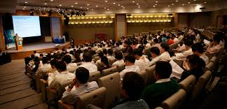

Seminar Teknologi Terkini di ITERA
Pada tanggal 18 Februari 2025, ITERA menyelenggarakan seminar teknologi terkini yang membahas perkembangan terbaru dalam bidang informatika. Seminar ini dihadiri oleh berbagai pakar dan praktisi industri.
Acara ini bertujuan untuk memberikan wawasan baru kepada mahasiswa dan dosen tentang tren teknologi masa depan.